Kirchhoff’s voltage law to the circuit shown in Figure 6 .
Therefore, the value of current I is  .
.
Refer to Figure P4.2(a) in the text book.
The voltage drop across diode is, .
(a)
Redraw the circuit diagram is shown in Figure 1.
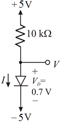
Figure 1
From Figure 1, the positive supply is connected to anode and negative supply is connected to cathode. Diode operated in the forward direction. So the diode is conduct (On).
The resultant circuit is shown in figure 2.
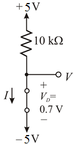
Figure 2
Apply Kirchhoff’s voltage law to the circuit shown in figure 2.
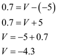
Therefore, the value of voltage V is 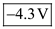.
Apply Kirchhoff’s voltage law to the circuit shown in Figure 2.
Therefore, the value of voltage I is 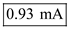.
(b)
Refer to Figure P4.2(b) in the text book.
Redraw the circuit diagram is shown in Figure 3.
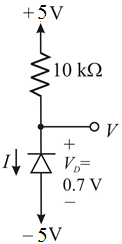
Figure 3
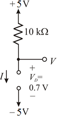
Figure 4
Form Figure 4, the value of current I is, 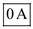.
Applying Kirchhoff’s voltage law to the above circuit,
Therefore, the value of voltage V is 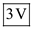.
(c)
Refer to Figure P4.2(c) in the text book.
Redraw the circuit diagram is shown in Figure 5.
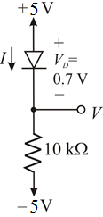
Figure 5
From the above circuit, the positive supply is connected to anode and negative supply is connected to cathode. Diode operated in the forward direction. So the diode is conduct (On). The circuit becomes
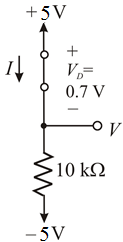
Figure 6
Apply Kirchhoff’s voltage law to the circuit shown in Figure 6. 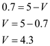
Therefore, the value of voltage V is 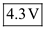.
Kirchhoff’s voltage law to the circuit shown in Figure 6 .
Therefore, the value of current I is .
Refer to Figure P4.2(d) in the text book.
Redraw the circuit diagram is shown in Figure 7.
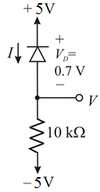
Figure 7
From the above circuit, the positive supply is connected to anode and negative supply is connected to cathode. Diode operated in the reverse direction. So the diode is not conduct (Off). The circuit becomes
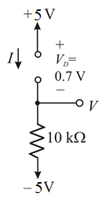
Figure 8
Form Figure 8, The value of current I is,0 A.
Therefore the resultant current is  .
.
Apply Kirchhoff’s voltage law to the circuit
Therefore, the value of voltage V is 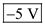.